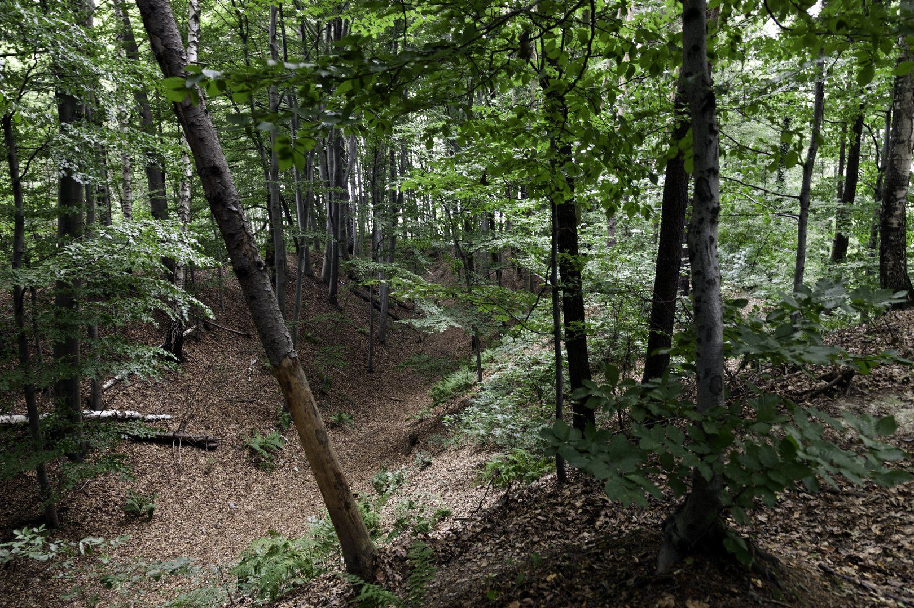
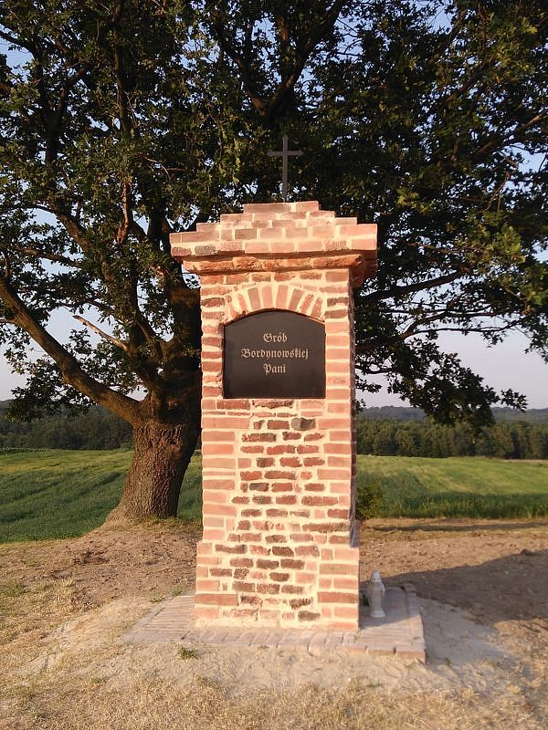
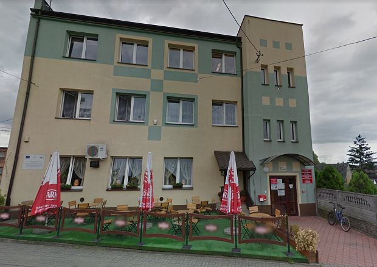
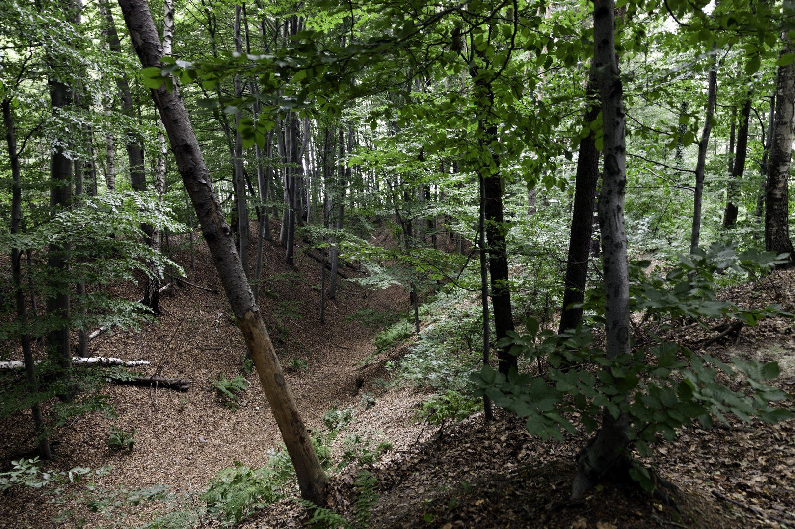
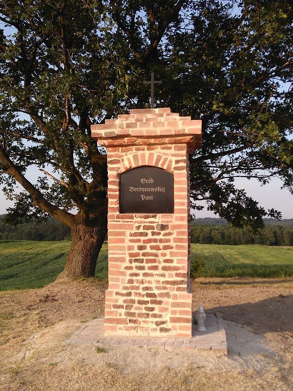
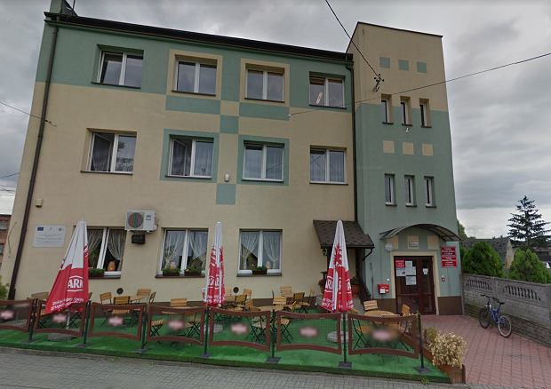

Lubomia
To urocza wieś rozłożona w dolinie potoku Lubomka. Ze wschodu osłaniają ją porośnięte lasem pagórki, wśród zieleni których kryją się prastare pozostałości grodziska Gołężyców. Od południa rozpościerają się stawy rybne. Otwartą dolinę Odry od zachodu zamyka gęsta zabudowa miasta Racibórz. Od północy zaś wieś osłonięta jest wzgórzami, na których rozłożyła się wieś Pogrzebień. W samym centrum na wzniesieniu stoi piękny kościół zbudowany w końcu ubiegłego wieku z czerwonej cegły. Jego strzelista wieża góruje mad wsią. Ponieważ gleby lubomskie są żyzne i wydają obfite plony, nieliczni rolnicy postawili na hodowlę zwierząt, a nowe warunki ekonomiczne stworzyły możliwość powstania i rozwoju trzech dużych zakładów mięsnych, które dają zatrudnienie prawie 200 mieszkańcom i zbyt hodowcom. Dobrze jest rozwinięta sieć sklepów, zaś w wyśmienite, smaczne pieczywo zaopatruje nas piekarnia GS-u Lubomia. Prawie wszystkie drogi są wyasfaltowane, a Gminne Przedszkole, Szkoła Podstawowa i Gimnazjum zapewniają naszym dzieciom naukę od najmłodszych lat. Lubomski Klub Sportowy ,,Silesia” umożliwia utalentowanym dzieciom i młodzieży rozwój sportowy. Gminny Ośrodek Kultury w centrum wsi skupia wokoło siebie młodzież i dorosłych. W jego budynku mieści się Gminna Biblioteka i siedziba Towarzystwa Śpiewaczego ,,Lutnia”, które swoimi występami uświetnia wszystkie uroczystości wiejskie i kościelne oraz zespół taneczny ,,Flesz” a także orkiestra Gminy Lubomia . Nad naszym bezpieczeństwem czuwają strażacy skupieni w OSP Lubomia.
Historia
Ziemie nad Odrą, podobnie jak cały region rybnicko-wodzisławski, sięgają swoją historią czasów epoki kamiennej. Świadczą o tym najstarsze znaleziska w postaci glinianych naczyń. Z młodszej epoki kamienia (neolitu) pochodzą ślady osadnictwa w Syryni. Z pierwszych wieków naszej ery pochodzą znaleziska monet rzymskich, świadczące o bliskim kontakcie miejscowej ludności z Imperium Rzymskim przez Bramę Morawską. Z VII wieku pochodzi osada w Syryni a przede wszystkim grodzisko z VII-IX wieku w lasach koło Lubomi. Znaleziska resztek ceramicznych mogą wskazywać na to, iż istniały tu mniejsze lub większe osady. Pierwsze wzmianki historyczne o wsi Lubomia pochodzą z 1303 r. Zabytki gminy to w Bukowie Kaplica Różańcowa z 1770 r., na Grabówce spichlerz z XVIII wieku, w Lubomi kapliczka św. Jana Nepomucena w Syryni drewniany kościółek z 1510 r.
Atrakcje
- Kościół im. św. Marii Magdaleny
- Grodzisko
- Kaplica św. Jana Nepomucena
- Park
- Grób Pani Bordynowskiej
- Dom kultury
- Hala sportowa
- Boisko sportowe
- Siłownia "Siłka Pawełka"
Galeria miejscowości
 




